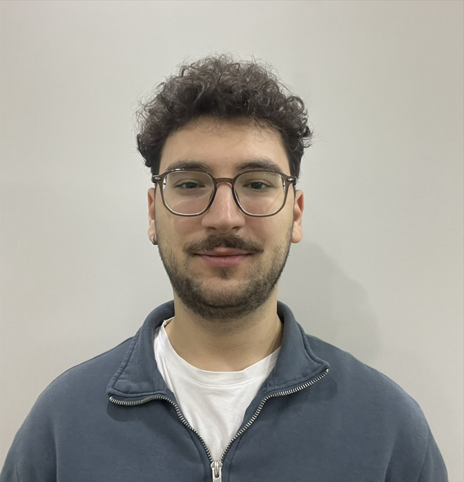

Student IT Assistant
ITU Directorate of Information Technology
Supporting IT operations and infrastructure at Istanbul Technical University while contributing to technical projects within the university's information technology directorate.
Building end-to-end web applications while managing complex monitoring infrastructures — bridging software development and system reliability.

A versatile Computer Engineering student and Junior SRE, uniquely combining full-stack development expertise with a deep focus on system observability. Proven track record of building end-to-end web applications while simultaneously managing complex monitoring infrastructures. Passionate about leveraging AI and modern engineering practices to bridge the gap between software development and system reliability.
Student IT Assistant
Supporting IT operations and infrastructure at Istanbul Technical University while contributing to technical projects within the university's information technology directorate.
Jr. SRE & Observability Engineer
Manage and instrument AppDynamics APM across complex distributed architectures for 24/7 full-stack visibility. Correlate frontend UX metrics with backend performance data. Develop responsive frontend components and scalable backend logic as a full-stack contributor. Design and automate real-time security dashboards and alerting thresholds.
Engineering Intern
Worked full-time as an assistant engineer in an iron and steel industrial company. Organized the department website and managed warehouse and stock control systems. Enhanced intermediate-level German and advanced English through daily interactions with multicultural teams.
Expertly navigates the intersection of Full-Stack Development and Site Reliability Engineering, with hands-on experience in Python, C/C++, SQL, Docker, and AppDynamics.
B.Sc. — Computer Engineering
Computer Engineering undergraduate program focused on software development, systems, and modern engineering practices.
High School — Science Focus
Science-focused high school education that built the foundation for engineering and technology studies.
Communication
Turkish — Native
English — Intermediate (B2)
German — Basic (A2)